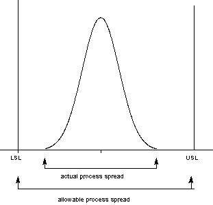
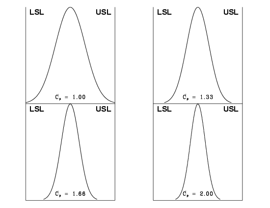
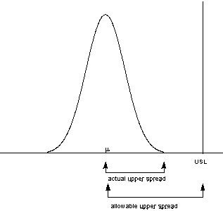

The original, as published: NIST/SEMATECH e-Handbook of Statistical Methods, Process capability. public domain (a work of the US Government), https://www.nist.gov/oism/copyrights. Imported as published, from https://www.itl.nist.gov/div898/handbook/pmc/section1/pmc16.htm https://www.itl.nist.gov/div898/handbook/pmc/section1/pmc16.htm
| 6. Process or Product Monitoring and Control 6.1. Introduction
| |||||||||||||||||||||
| Process capability compares the output of an in-control process to the specification limits by using capability indices. The comparison is made by forming the ratio of the spread between the process specifications (the specification "width") to the spread of the process values, as measured by 6 process standard deviation units (the process "width"). Process Capability Indices | |||||||||||||||||||||
| A process capability index uses both the process variability and the process specifications to determine whether the process is "capable" | We are often required to compare the output of a stable process with the process specifications and make a statement about how well the process meets specification. To do this we compare the natural variability of a stable process with the process specification limits. A process where almost all the measurements fall inside the specification limits is a capable process. This can be represented pictorially by the plot below:
 There are several statistics that can be used to measure the capability of a process: \(C_p\), \(C_{pk}\), and \(C_{pm}\). Most capability indices estimates are valid only if the sample size used is "large enough". Large enough is generally thought to be about 50 independent data values. The \(C_p\), \(C_{pk}\), and \(C_{pm}\) statistics assume that the population of data values is normally distributed. Assuming a two-sided specification, if \(\mu\) and \(\sigma\) are the mean and standard deviation, respectively, of the normal data and \(\mbox{USL}\), \(\mbox{LSL}\), and \(T\) are the upper and lower specification limits and the target value, respectively, then the population capability indices are defined as follows. | ||||||||||||||||||||
| Definitions of various process capability indices | $$ C_{p} = \frac{\mbox{USL} - \mbox{LSL}} {6\sigma} $$ $$C_{pk} = \min{\left[ \frac{\mbox{USL} - \mu} {3\sigma}, \frac{\mu - \mbox{LSL}} {3\sigma}\right]} $$ $$ C_{pm} = \frac{\mbox{USL} - \mbox{LSL}} {6\sqrt{\sigma^2 + (\mu - T)^2}} $$ | ||||||||||||||||||||
| Sample estimates of capability indices | Sample estimators for these indices are given below. (Estimators are indicated with a "hat" over them). $$ \hat{C}_{p} = \frac{\mbox{USL} - \mbox{LSL}} {6s} $$ $$ \hat{C}_{pk} = \min{\left[ \frac{\mbox{USL} - \bar{x}} {3s}, \frac{\bar{x} - \mbox{LSL}} {3s}\right]} $$ $$ \hat{C}_{pm} = \frac{\mbox{USL} - \mbox{LSL}} {6\sqrt{s^2 + (\bar{x} - T)^2}} $$ The estimator for \(C_{pk}\) can also be expressed as \(C_{pk} = C_p(1-k)\), where \(k\) is a scaled distance between the midpoint of the specification range, \(m\), and the process mean, \(\mu\). Denote the midpoint of the specification range by \(m = (\mbox{USL} + \mbox{LSL})/2\). The distance between the process mean, \(\mu\), and the optimum, which is \(m\), is \(\mu - m\), where \(m \le \mu \le \mbox{LSL}\). The scaled distance is $$ k = \frac{|m - \mu|} {(\mbox{USL} - \mbox{LSL})/2}, \;\;\;\;\;\; 0 \le k \le 1 \, .$$ (The absolute sign takes care of the case when \(\mbox{LSL} \le \mu \le m\)). To determine the estimated value, \(\hat{k}\), we estimate \(\mu\) by \(\bar{x}\). Note that \(\bar{x} \le \mbox{USL}\). The estimator for the \(C_p\) index, adjusted by the \(k\) factor, is $$ \hat{C}_{pk} = \hat{C}_{p}(1 - \hat{k}) \, . $$ Since \(0 \le k \le 1\), it follows that \(\hat{C}_{pk} \le \hat{C}_{p}\).
| ||||||||||||||||||||
| Plot showing \(C_p\) for varying process widths | To get an idea of the value of the \(C_p\) statistic for varying process widths, consider the following plot.
 This can be expressed numerically by the table below: | ||||||||||||||||||||
| Translating capability into "rejects" |
where ppm = parts per million and ppb = parts per billion. Note that the reject figures are based on the assumption that the distribution is centered at \(\mu\). We have discussed the situation with two spec. limits, the \(\mbox{USL}\) and \(\mbox{LSL}\). This is known as the bilateral or two-sided case. There are many cases where only the lower or upper specifications are used. Using one spec limit is called unilateral or one-sided. The corresponding capability indices are | ||||||||||||||||||||
| One-sided specifications and the corresponding capability indices | $$ C_{pu} = \frac{\mbox{allowable upper spread}} {\mbox{actual upper spread}} = \frac{\mbox{USL} - \mu} {3\sigma} $$ and $$ C_{pl} = \frac{\mbox{allowable lower spread}} {\mbox{actual lower spread}} = \frac{\mu - \mbox{LSL}} {3\sigma} \, , $$ where \(\mu\) and \(\sigma\) are the process mean and standard deviation, respectively. Estimators of \(C_{pu}\) and \(C_{pl}\) are obtained by replacing \(\mu\) and \(\sigma\) by \(\bar{x}\) and \(s\), respectively. The following relationship holds $$ C_p = \frac{C_{pu} + C_{pl}}{2} \, . $$ This can be represented pictorially by  Note that we also can write: $$ C_{pk} = \mbox{min}(C_{pl}, \, C_{pu}) \, . $$ | ||||||||||||||||||||
| Confidence Limits For Capability Indices | |||||||||||||||||||||
| Confidence intervals for indices | Assuming normally distributed process data, the distribution of the sample \(\hat{C}_p\) follows from a Chi-square distribution and \(\hat{C}_{pu}\) and \(\hat{C}_{pl}\) have distributions related to the non-central t distribution. Fortunately, approximate confidence limits related to the normal distribution have been derived. Various approximations to the distribution of \(\hat{C}_{pk}\) have been proposed, including those given by Bissell (1990), and we will use a normal approximation. The resulting formulas for \(100(1-\alpha) \%\) confidence limits are given below. Confidence Limits for \(C_p\) are $$ Pr\{\hat{C}_{p}(L_1) \le C_p \le \hat{C}_{p}(L_2)\} = 1 - \alpha \, ,$$ where $$ \begin{eqnarray} L_1 & = & \sqrt{\frac{\chi^2_{\alpha/2, \, \nu}}{\nu}} \, , \\ & & \\ L_2 & = & \sqrt{\frac{\chi^2_{1-\alpha/2, \, \nu}}{\nu}} \, , \end{eqnarray}$$ and \(\nu = \) degrees of freedom. | ||||||||||||||||||||
| Confidence Intervals for \(C_{pu}\) and \(C_{pl}\) | Approximate \(100(1-\alpha)\) % confidence limits for \(C_{pu}\) with sample size \(n\) are: $$ C_{pu}(lower) = \hat{C}_{pu} - z_{1-\beta}\sqrt{\frac{1}{9n} + \frac{\hat{C}_{pu}^{2}}{2(n-1)}} $$ and $$ C_{pu}(upper) = \hat{C}_{pu} + z_{1-\alpha}\sqrt{\frac{1}{9n} + \frac{\hat{C}_{pu}^{2}}{2(n-1)}} \, ,$$ with \(z\) denoting the percent point function of the standard normal distribution. If \(\beta\) is not known, set it to \(\alpha\). Limits for \(C_{pl}\) are obtained by replacing \(\hat{C}_{pu}\) by \(\hat{C}_{pl}\). | ||||||||||||||||||||
| Confidence Interval for \(C_{pk}\) | Zhang et al. (1990) derived the exact variance for the estimator of \(C_{pk}\) as well as an approximation for large \(n\). The reference paper is Zhang, Stenback and Wardrop (1990), "Interval Estimation of the process capability index," Communications in Statistics: Theory and Methods, 19(21), 4455-4470. The variance is obtained as follows. Let
| ||||||||||||||||||||
| Capability Index Example | |||||||||||||||||||||
| An example | For a certain process the \(\mbox{USL} = 20\) and the \(\mbox{LSL} = 8\). The observed process average, \(\bar{x} \ge 16\), and the standard deviation, \(s = 2\). From this we obtain $$ \hat{C}_{p} = \frac{\mbox{USL} - \mbox{LSL}} {6s} = \frac{20 - 8} {6(2)} = 1.0 \, . $$ This means that the process is capable as long as it is located at the midpoint, \(m = (\mbox{USL} + \mbox{LSL})/2 = 14\). But it doesn't, since \(\bar{x} \ge 16\). The \(\hat{k}\) factor is found by $$ \hat{k} = \frac{|m - \bar{x}|} {(\mbox{USL} - \mbox{LSL})/2} = \frac{2} {6} = 0.3333 $$ and $$ \hat{C}_{pk} = \hat{C}_{p}(1-\hat{k}) = 0.6667 \, .$$ We would like to have \(\hat{C}_{pk}\) at least 1.0, so this is not a good process. If possible, reduce the variability or/and center the process. We can compute the \(\hat{C}_{pu}\) and \(\hat{C}_{pl}\) using $$ \hat{C}_{pu} = \frac{\mbox{USL} - \bar{x}} {3s} = \frac{20 - 16} {3(2)} = 0.6667 $$ and $$ \hat{C}_{pl} = \frac{\bar{x} - \mbox{LSL}} {3s} = \frac{16 - 8} {3(2)} = 1.3333 \, . $$ From this we see that the \(\hat{C}_{pu}\), which is the smallest of the above indices, is 0.6667. Note that the formula \(\hat{C}_{pk} = \hat{C}_{p}(1 - \hat{k})\) is the algebraic equivalent of the \(\mbox{min}(\hat{C}_{pu}, \, \hat{C}_{pl})\) definition. | ||||||||||||||||||||
| What happens if the process is not approximately normally distributed? | |||||||||||||||||||||
| What you can do with non-normal data | The indices that we considered thus far are based on normality of the process distribution. This poses a problem when the process distribution is not normal. Without going into the specifics, we can list some remedies.
There is, of course, much more that can be said about the case of nonnormal data. However, if a Box-Cox transformation can be successfully performed, one is encouraged to use it. | ||||||||||||||||||||